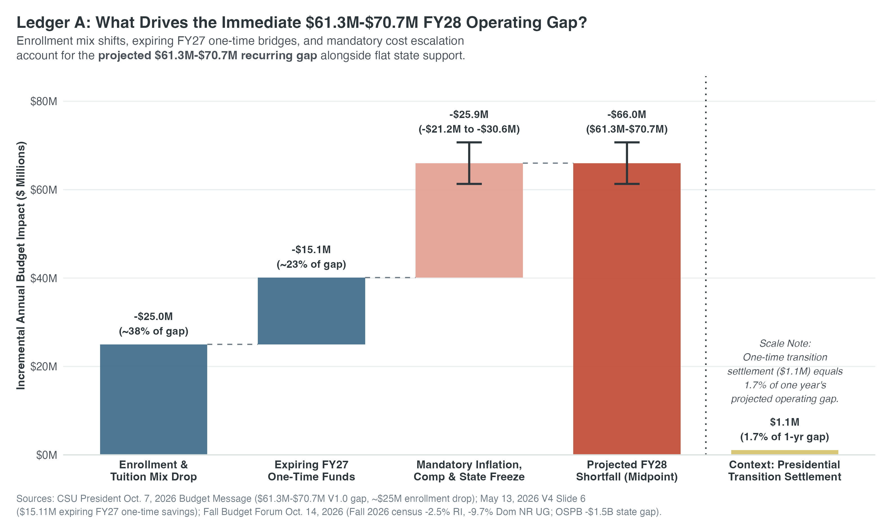

| Two Separate Ledgers for Understanding CSU's Budget Position | ||
| Distinguishing Near-Term FY28 Drivers from Long-Term Structural Constraints | ||
| Dimension | Ledger A: Immediate FY28 Gap | Ledger B: Multi-Year Structural Context |
|---|---|---|
| Core Question | What changes CSU's E&G budget from FY27 ($901.0M) to FY28? | Why is CSU's general fund tightly constrained during a -2.5% enrollment dip? |
| Dollar Scale | $61.3M – $70.7M ($66.0M midpoint) | ~45% E&G Workforce/Budget Model; ~22% Capital Debt; ~17% Athletics Net; ~16% State/Discounting |
| Primary Drivers | 1) Enrollment/NR tuition drop (~$25.0M); 2) Expiring FY27 one-time bridge funds ($15.11M); 3) Comp/benefits/utilities under flat state support ($21.2M–$30.6M). | Long-term expansion across both E&G Admin Pro (+62.3%) and E&G Faculty (+43.3%), doubled System debt ($1.33B), and a 21.3% tuition discount rate. |
| Presidential Transition ($1.1M) | One-time $1.1M settlement equals ~1.7% of one year's midpoint FY28 gap. | Primarily a governance & institutional trust issue rather than a core budget driver. |
| Athletics ($75.2M Gross Budget) | Minimal year-over-year change unless net institutional transfers shift. | Meaningful ~17% structural pressure (~$15.6M net operating support) + $206.96M bonded debt. |
| Grant-Funded Staff (e.g., CEMML) | Not part of the E&G deficit; self-funded on external grants & contracts. | Must be separated out (~69.7% of all AP FTE) so E&G discussions stay accurate. |
| Sources: Oct. 7, 2026 Campus Budget Update; May 13, 2026 Campus V4 Forum; CSU Fact Book FY27; OSA Report 2516F-B. | ||
Understanding CSU’s FY27–28 Operating Budget Gap
A Neutral, Primary-Source Guide to the Immediate Cliff, Multi-Year Structural Context, and Research vs. General-Fund Accounting
Purpose & Shared Context: Colorado State University (Fort Collins) enters late 2026 governance discussions—including the Nov. 30 AAUP chapter meeting, Dec. 1 Faculty Council, and Dec. 3–4 Board of Governors meetings—facing a projected $61.3M–$70.7M FY28 Education & General (E&G) budget gap. Recent leadership transitions, including Former President Amy Parsons’ $1.1M transition settlement/non-disparagement agreement and high-profile athletics contracts, have raised fair questions about governance, priorities, and communication. At the same time, primary public financial records show that the FY28 shortfall reflects deeper multi-year trends—non-resident enrollment shifts, expiring one-time stopgaps, state funding constraints, permanent E&G payroll commitments across both administrative and academic units, and capital debt service—that affect CSU regardless of individual personnel decisions.
To make productive campus dialogue easier, this resource separates short-run FY28 budget mechanics (Ledger A) from multi-year structural pressures (Ledger B) using 70 archived public documents logged in data/sources_manifest.csv. Rather than assigning blame to any single constituency, the goal is to ensure faculty, staff, deans, VPs, and board members are working from the same audited numbers.
Projected FY28 E&G Gap
$61.3M–$70.7M
Reflects ~$25.0M enrollment/mix decline, $15.11M expiring FY27 one-time funds & $21.2M–$30.6M cost/comp escalation (Oct. 7 Memo).
Non-E&G Admin Pro Share
69.7%
Of 4,597.7 FY25 AP FTE, 3,205.5 are externally or self-funded (96.3% in WCNR/CEMML); 1,392.2 sit on E&G (FB27 Table 124).
10-Yr E&G Workforce vs. Demand
+62.3% / +43.3%
FY15–FY25 E&G Admin Pro (+62.3%) and E&G Faculty (+43.3%, mainly CCA/NTT) expanded while Resident Student FTE fell -5.0% (FY15–FY26).
Athletics: Gross vs. Net
$75.2M → $15.6M
Gross spending (2516F-B) minus $42.6M earned revenue & $10.9M aid flow-back = ~$15.6M net operating support, plus $206.96M debt.
Why Campus Conversations Often Talk Past Each Other: Ledger A vs. Ledger B
Many disagreements on campus stem from mixing one-year operating variances with decade-scale budget structure. Looking at the two ledgers separately clarifies how each factor fits.
How This Site Was Built & Reality Checks Applied
Transparency & Build Disclosure: This site was initiated and reviewed by Matthew R.V. Ross (CSU faculty) using Google DeepMind’s Antigravity agentic coding environment to assemble a fully reproducible R (4.5.2) + Quarto (1.10) pipeline (src/00–src/05). Because automated tools and public commentary can both make mistakes, six explicit reality checks were built into the workflow:
- Primary-Source-Only Ingestion: Every chart and table is computed programmatically from 70 downloaded primary PDFs and public federal APIs archived with SHA-256 hashes in
data/sources_manifest.csv. - Visual Inspection of Posted Slides (Zero Guessing): Rasterized slide decks revealed that Slides 14–15 of the posted Oct. 14, 2026 PDF had blank scenario table placeholders online; rather than estimating values, Ledger A relies strictly on the Oct. 7, 2026 memo and May 13 V4 Slide 6.
- Soft-Money Research Distinction (CEMML / CIRA / VTH): Human domain review explicitly required splitting non-E&G research/enterprise AP roles (
69.7%campus-wide;96.3%in WCNR/CEMML) from general-fund E&G lines (Table 124) so self-funding grant staff are not lumped into structural E&G overhead. - Accounting Reclassification Controls: Historical ColOBS series isolate both FY19’s
$41.64Mfinancial-aid shift (XAtoP1) and FY26’s~$111.26Mfringe decentralization so accounting moves are not mistaken for sudden spending spikes. - Two-Way Claim Verification & Non-Interpolation: Both leadership statements and circulating faculty claims were cross-checked against public records—flagging, for instance, that public San Francisco Chronicle reporting on Title IX investigator Jeffrey Lamoureaux involved other universities rather than CSU, and leaving omitted
FY21–FY24E&G State Classified rows in Fact Book Table 128 asNAwithout interpolation. - Automated Reconciliation Checks (
src/05_verify_audit.R): Seven programmatic verification checks validate all sums, splits, and outputs on every run. Full methodology and data limitations appear on How This Was Built.
Guide to Sections

- Ledger A: FY28 Gap reviews the
$61.3M–$70.7Mprojection alongside Fall 2026 census shifts (-2.5%RI enrollment,-9.7%Domestic Non-Resident UG, 4-year graduation rising to55.1%) and FY27 V4 closeout figures ($15.112Mexpiring one-time savings and160.58permanent FTE reductions across colleges and support units). - Ledger B: Structural Context disaggregates E&G personnel from externally funded research staff like WCNR/CEMML (
96.3%non-E&G), examines 10-year E&G growth across both admin (+62.3%) and faculty (+43.3%, primarily CCA/NTT), and reviews tuition discounting (21.3%) and Colorado funding constraints. - Athletics & Debt reconciles the
$75.24Mgross Athletics budget down to~$15.57Mnet operating support, details CSU’s$206.96MAthletics bonded debt (18.5%of campus debt), and evaluates football cancellation and NCAA tournament scenarios objectively. - Governance & Peers examines trust-related governance questions, documents a factual source check on Title IX hiring claims, benchmarks CSU against 7 Colorado and land-grant R1 peers (
IPEDS FY23), and outlines constructive questions ahead of the FY28 Hybrid RCM transition. - How This Was Built documents the full build pipeline, AI/human verification safeguards, accounting scope notes, upstream portal blocks (
DATA_GAPS.md), and all 70 primary sources.
Downloadable Brief: A formatted 12-page PDF Brief (Understanding CSU’s FY27–28 Operating Budget Gap) is also available for committee packets or offline reading.